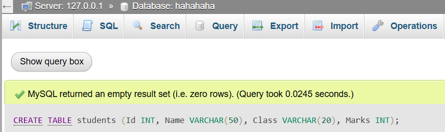
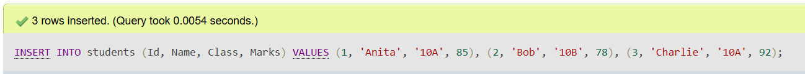
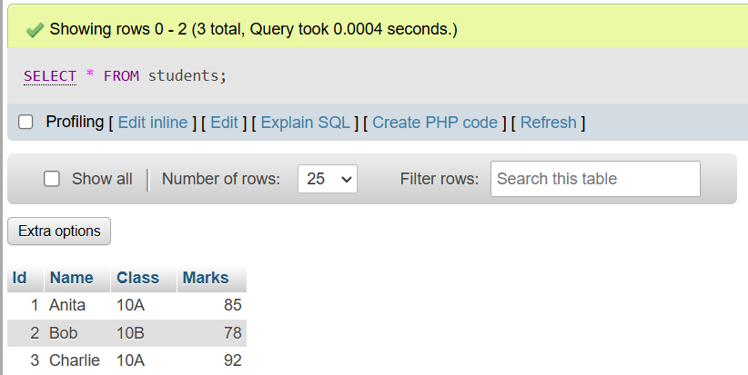
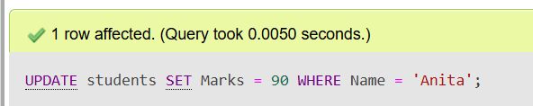
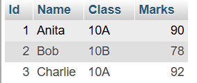
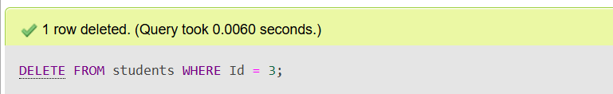

Database Management System (DBMS)
Data and Information
Data: Raw facts and figures without any context.
Information: Processed data that is meaningful and useful for decision making.
Features of Information
- Accuracy
- Relevance
- Timeliness
- Completeness
- Understandability
Database and Its Purpose
A Database is an organized collection of related data stored electronically for easy access, management, and updating.
Purpose: To efficiently store, retrieve, and manage data to serve the information needs of users.
Terminologies in Database
- Table: A collection of related data organized in rows and columns.
- Field: A column in a table representing an attribute.
- Record: A row in a table representing a single data item.
- Tuple: Another term for a record or row.
- Object: An entity that has attributes and behavior in object-oriented databases.
- Keys: Attributes used to uniquely identify records (e.g., Primary Key).
Data Dictionary
A data dictionary is a repository that contains definitions and descriptions of data elements used in the database.
Database Management System (DBMS)
Introduction
A DBMS is software that allows users to create, manage, and manipulate databases efficiently.
Objectives
- To store large amounts of data safely.
- To provide data access and retrieval.
- To maintain data integrity and security.
- To minimize data redundancy.
Advantages
- Improved data sharing.
- Reduced data inconsistency.
- Data security and privacy.
- Backup and recovery support.
Disadvantages
- High initial cost.
- Complex to design and maintain.
- Requires trained personnel.
Types of Database Models
Hierarchical Model
Data is organized in a tree-like structure with parent-child relationships.
Network Model
Data is organized as a graph allowing many-to-many relationships.
Relational Model
Data is organized in tables (relations) with rows and columns.
Entity-Relationship Model
A conceptual model representing entities and relationships used for database design.
Integrity Constraints and Types
Domain Constraints
Specifies the permissible values for a given attribute.
Entity Constraints
Ensures each entity (record) is uniquely identifiable.
Referential Integrity
Ensures foreign keys correctly reference primary keys in related tables.
Keys
- Primary Key: Unique identifier for a record.
- Foreign Key: Attribute that links two tables.
- Candidate Key: A minimal set of attributes that can uniquely identify a record.
- Composite Key: A key made of two or more attributes.
Normalization
Introduction
Process of organizing data to reduce redundancy and improve data integrity.
Normal Forms
- 1NF (First Normal Form): Eliminate repeating groups; each field contains atomic values.
- 2NF (Second Normal Form): Remove partial dependencies; every non-key attribute depends on the whole primary key.
- 3NF (Third Normal Form): Remove transitive dependencies; non-key attributes depend only on the primary key.
Advantages
- Reduces data redundancy.
- Improves data consistency.
- Facilitates easier maintenance.
Disadvantages
- Can make queries more complex.
- May require more joins, impacting performance.
Centralized and Distributed Database
Introduction
Centralized Database: Data is stored at a single central location.
Distributed Database: Data is distributed across multiple physical locations.
Advantages
- Centralized: Easier to manage and maintain.
- Distributed: Improved reliability and availability; better performance by local access.
Disadvantages
- Centralized: Single point of failure, limited scalability.
- Distributed: Complex to design and manage; data consistency challenges.
Comparison
| Feature |
Centralized DB |
Distributed DB |
| Location |
Single location |
Multiple locations |
| Data Access |
Slower for remote users |
Faster for local users |
| Cost |
Lower initial cost |
Higher initial cost |
| Reliability |
Single point of failure |
High reliability |
Database Security
Introduction
Measures and controls to protect the database from unauthorized access and threats.
Challenges
- Unauthorized access
- Data theft or loss
- Data corruption
- Backup failures
Security Measures
- Authentication and authorization
- Encryption
- Regular backups
- Audit trails
Roles of DBA (Database Administrator)
- Managing database security
- Performance tuning
- Backup and recovery
- Data integrity enforcement
- User management
Practical Topics: DDL and DML Languages
SQL Data Types
| Data Type |
Description |
| CHAR | Fixed-length character string |
| VARCHAR | Variable-length character string |
| BINARY | Fixed-length binary data |
| VARBINARY | Variable-length binary data |
| TINYBLOB | Small binary large object |
| TINYTEXT | Small text string |
| TEXT | Large text string |
| LONGTEXT | Very large text string |
| ENUM | Enumeration: predefined list of values |
| BIT | Bit-field type |
| TINYINT | Very small integer |
| BOOLEAN | True or False values |
| INTEGER | Standard integer number |
| FLOAT | Floating point number |
| DOUBLE | Double precision floating point number |
| DECIMAL | Exact numeric values with decimal points |
| DATE | Date values |
| DATETIME | Date and time values |
Past Year Questions (2020–2024 & Model Questions)
1. What is Database and DBMS? List out the advantages and disadvantages of DBMS.
Database: A structured collection of related data.
DBMS: Software that manages database creation, access, and modification.
- Advantages: Minimizes redundancy, ensures security, supports backup, improves accessibility.
- Disadvantages: Costly setup, complex to manage, requires skilled professionals.
2. Differentiate between file processing system and DBMS.
- Redundancy: High in file system, low in DBMS.
- Security: Weak in file system, strong in DBMS.
- Access: Manual in file system, query-based in DBMS.
- Data Sharing: Difficult in file system, easy in DBMS.
3. Explain the different models of DBMS with advantages and disadvantages.
- Hierarchical Model: Fast access but rigid and difficult to modify.
- Network Model: Flexible relationships but complex design.
- Relational Model: Easy to use, highly flexible; slower for huge joins.
- ER Model: Simple for planning; not implemented directly.
4. What is a relational database? How is it different from other database models?
A relational database organizes data in tables (relations) using rows and columns. It differs from hierarchical or network models by allowing flexible, SQL-based access and relationships using keys.
5. What is data redundancy? How does DBMS help in reducing it?
Data redundancy means storing the same data in multiple places. DBMS reduces redundancy using centralized storage, relationships, and normalization techniques.
6. Differentiate between centralized and distributed database systems.
- Centralized: All data stored in one location; easy to manage but risky if it fails.
- Distributed: Data stored at multiple locations; more reliable but harder to maintain.
7. Who is Database Administrator (DBA)? What are their responsibilities?
DBA is responsible for managing the database system. Major duties include:
- Ensuring security and access control
- Performing backups and recovery
- Tuning performance
- Managing users and permissions
8. Define normalization. Explain 1NF, 2NF, and 3NF with examples.
Normalization is the process of organizing data to minimize redundancy and dependency.
- 1NF: No repeating groups; atomic values.
- 2NF: No partial dependency on primary key.
- 3NF: No transitive dependency; non-key attributes depend only on the primary key.
9. Explain the terms: primary key, foreign key, and candidate key.
- Primary Key: A primary key is a column or a set of columns in a database table that uniquely identifies each row in that table.
Example: In a table called Students, the column StudentID can be used as the primary key since each student has a unique ID.
- Foreign Key: A foreign key is a column or set of columns in one table that refers to the primary key in another table.
Example: In a table called Enrollments, the column StudentID might be a foreign key referencing StudentID in the Students table. This means every enrollment must be associated with a valid student.
- Candidate Key:A candidate key is any column or set of columns in a table that can uniquely identify a row.
Example: In a Users table, both Username and Email might be unique for each user. These are candidate keys. You can choose either as the primary key depending on the system’s design preferences.
10. What is SQL? Explain its components and common functions.
SQL (Structured Query Language) is used to manage databases.
- DDL: CREATE, DROP (schema structure)
- DML: SELECT, INSERT, UPDATE, DELETE (data manipulation)
- DCL: GRANT, REVOKE (access control)
- TCL: COMMIT, ROLLBACK (transactions)
11. Write SQL commands to perform given tasks.
A. Create a table named students with the fields: Id, Name, Class, and Marks.

B. Insert records into the students table with appropriate values.

C. Display all records from the students table.

D. Update the marks of a student whose name is 'Anita' to 90.


E. Delete the record of the student with id = 3.

12. Define the following terms.
- Data Dictionary: A repository of database metadata (structure, fields).
- Primary Key: Unique identifier for records.
- Relationship: Logical link between tables.
- DML: Commands to manipulate data (SELECT, INSERT, etc.).
- SQL: Language for managing data in RDBMS.
- Data Integrity: Ensures correctness and consistency of data.
- DDL: Commands to define structure (CREATE, DROP).
- Data Security: Protecting data from unauthorized access.
- Database System: The entire environment including DBMS, data, users, and hardware.